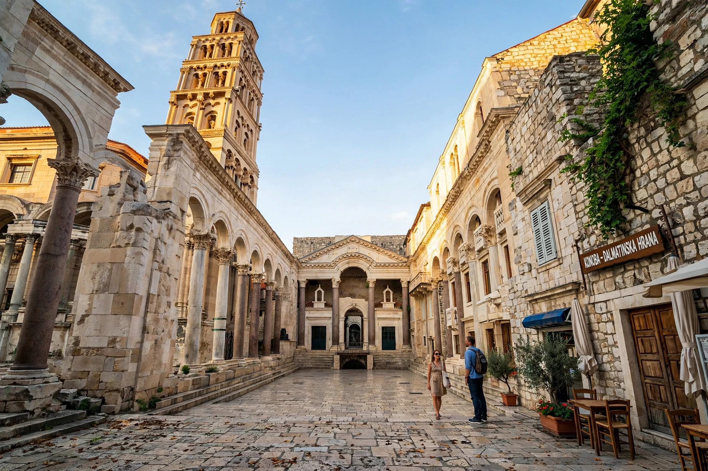

| Diocletian's Palace | |
|---|---|
| Location | Split, Croatia |
| Built | c. 295–305 AD |
| Built for | Emperor Diocletian |
| Status | UNESCO World Heritage Site (1979) |

Diocletian's Palace (Croatian: Dioklecijanova palača) is an ancient palace and fortress complex built for the Roman emperor Diocletian at the end of the third century AD in Split, Croatia. It forms about half of the old town of Split and remains one of the best-preserved monuments of Roman architecture in the world.
Built as Diocletian's retirement residence near his birthplace and the great city of Salona, the rectangular complex — roughly 215 × 180 m — combined a luxury villa with a military camp, with fortified walls, towers, an imperial apartment along the sea front, the Peristyle courtyard, a Temple of Jupiter and Diocletian's mausoleum.
After Diocletian's death in the early 4th century the palace became a town: refugees from Salona settled inside in the 7th century, the mausoleum became Split Cathedral, and medieval and modern houses filled the Roman shell. Robert Adam's 1764 survey influenced Neoclassical architecture across Europe.